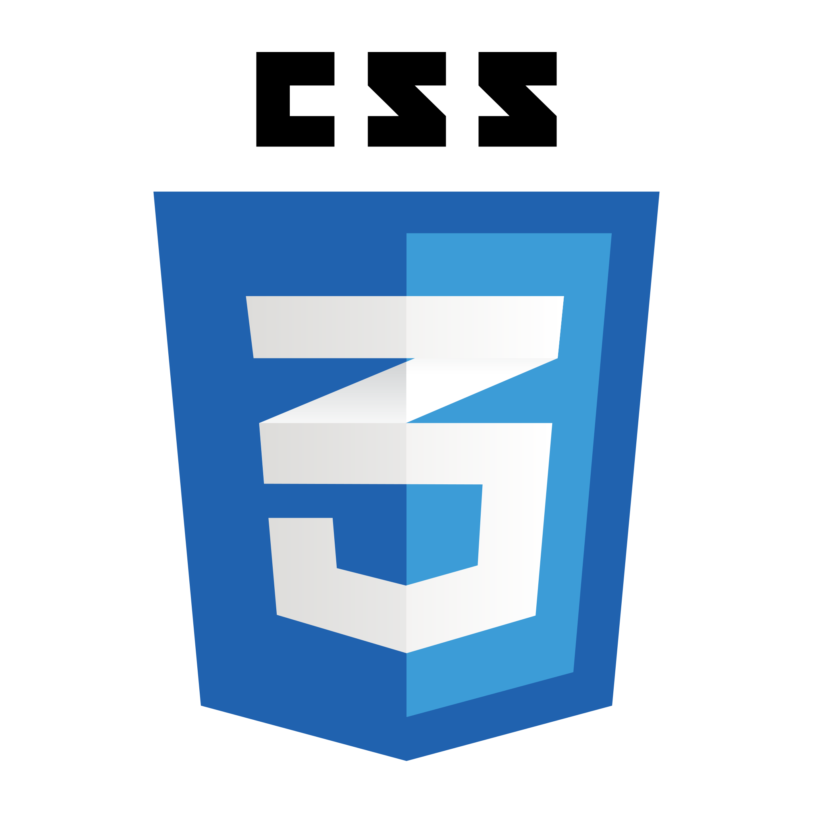

LiTScript

- Literate
- Interactive
- TypeScript
Document your frontend projects while you are developing them.
Document your frontend projects while you are developing them.
LiTScript is a web toolkit inspired by literate programming. It can be used as documentation tool, or as a full-fledged build tool/bundler for your web applications.
The fundamental idea of literate programming is that your code and documentation live together. LiTScript compiles your code and, at the same time, extracts documentation from it. Typically the output is a static web site, but you can also produce plain markdown files.
This web site is generated from the source of the LiTScript project. It showcases what you can do with it.
Version 2 brings some major changes to LiTScript:
Templates no longer live in external libraries. You can now create your templates directy inside your project.
External dependencies have been reduced to bare minimum. Most notably, styles are defined in vanilla CSS now instead of Less. CSS is powerful enough nowadays to eliminate the need of preprocessor.
The bundler has been changed from Webpack to esbuild. This further reduces the number of dependencies and improves performance.
Visualizer functionality is removed. Flip forward few pages to see how dynamic content can be added to LiTScript.
The animation below illustrates the basic operation of LiTScript.
LiTScript can extract documentation from any kind of source file: TS, JS,
CSS, LeSS, SCSS, etc. Just write your documentation in markdown inside
JSDoc comments /** ... */ and it will be processed by LiTScript.
/**
* ## Options
*
* The available settings are defined in the `Options` interface.
* Options specified in JSON and command line are case-insensitive.
* Keys are converted to lowercase before comparing them.
*/
export interface Options {
/**
* ### Base Directory
*
* This setting specifies the project root folder. LiTScript
* expects to find the [configuration files](#configuration-files)
* there.
*/
baseDir: string
 Unlike simpler documentation tools LiTScript does not just parse documentation
from comments. It uses the TypeScript Compiler API to provide syntax
highlighting, type information, and symbol links. Move your mouse over the code
snippet on the next page to see these in action.
Unlike simpler documentation tools LiTScript does not just parse documentation
from comments. It uses the TypeScript Compiler API to provide syntax
highlighting, type information, and symbol links. Move your mouse over the code
snippet on the next page to see these in action.
You can use TypeScript regions to insert code snippets in regular markdown files. The code fragment on the next page is defined inside region, which allows us to embed it here.
export async function main(args: string[]) {
try {
cfg.readOptionsFromFile()
cfg.parseCommandLine(args, cfg.getOptions())
await run()
}
catch (e) {
log.error(e instanceof Error ? e.message : e)
if (e instanceof cfg.CommandLineError) {
console.log("USAGE: lits <options>\n\nOPTIONS:")
cfg.printCommandLineOptions(cfg.getOptions())
}
process.exit()
}
}
Since LiTScript produces plain HTML you can use whatever frontend framework you like to add dynamic content. The simplest option is to create standard web components that can be inserted anywhere in markdown.
The animation few pages back is implemented as a web component that you can embed in markdown like this:
## How Does It Work?
The animation below illustrates the basic operation
of _LiTScript_.
<file-anim />
LiTScript provides a simple base class for custom elements that you can use as starting point for your own web components. It handles attaching shadow DOM and loading component's styles.
 There are multitude of build tools for JS and CSS realm nowadays. Previously
LiTScript used Webpack to bundle TypeScript modules and style sheets into
single JS and CSS files. In version 2 LiTScript switched to esbuild which
is a more compact and performant bundler library.
There are multitude of build tools for JS and CSS realm nowadays. Previously
LiTScript used Webpack to bundle TypeScript modules and style sheets into
single JS and CSS files. In version 2 LiTScript switched to esbuild which
is a more compact and performant bundler library.
esbuild contains out-of-the-box all the functionality that previously required additional Webpack plug-ins. With the switch, we reduced the number of NPM dependencies drastically. Another upshot is that bundling completes much faster than before.
 When you want to immediately see the effect of your edits, run LiTScript in
watch mode. In this mode, LiTScript runs in the background and rebuilds
your web site as soon as any source file changes.
When you want to immediately see the effect of your edits, run LiTScript in
watch mode. In this mode, LiTScript runs in the background and rebuilds
your web site as soon as any source file changes.
There is no need to use Live Server plug-in for VSCode anymore. Version 2 includes the serve mode which starts a development web server and live reloads changed pages automatically.
But if you are using VSCode as your editor, you can still install syntax highlighting for LiTScript comments.
 You can customize many aspects of the default templates with theming support. Colors, fonts, margins, spacings, and more can be changed easily with CSS variables. As a bonus, there are four different syntax highlighting schemes and a dozen different color themes that users can choose from. You can also add your own themes easily.
One annoying limitation of both markdown and HTML is that mathematical equations are not supported out-of-the-box. LiTScript enables math support by utilizing the library. With that you can write equations such as this:
LiTScript helps understanding the project structure by maintaining table of contents and dependency graph. These are JSON files which contain your documentation structure and module dependency information. They are displayed in the documentation making navigating the code easier, and helping to see the "big picture".
Feedback and contributions are welcome. Register an issue in GitHub, if you found a bug or have a feature request.